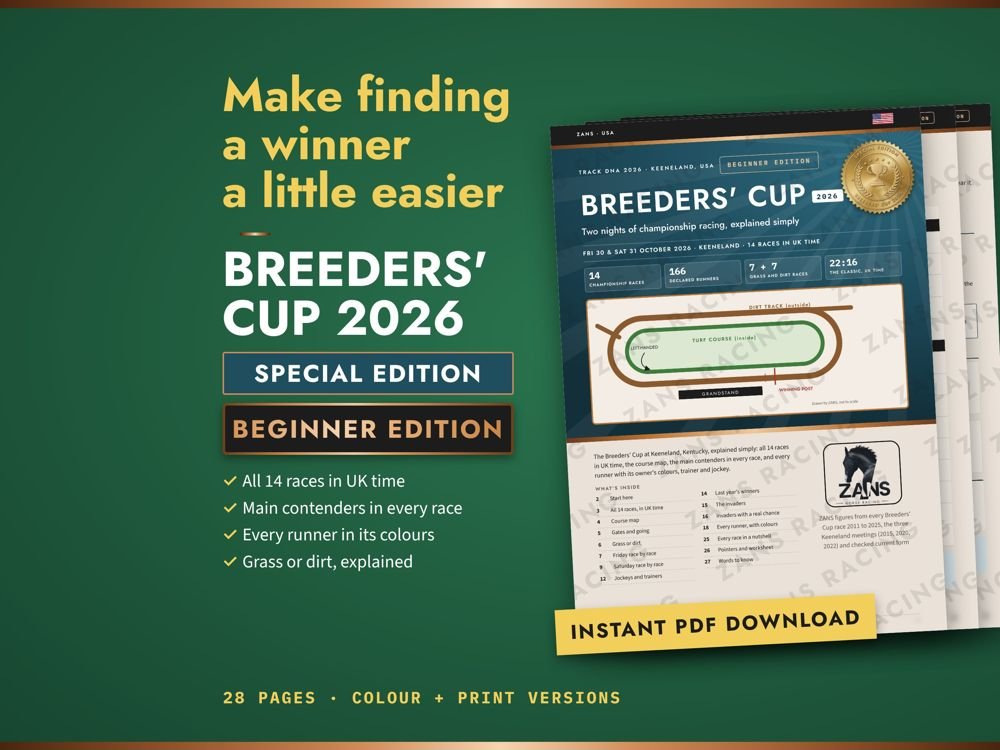

Breeders' Cup 2026 · Beginner Edition
28 pages · colour + print versions
New to the Breeders' Cup. Every race explained simply, in UK time.
- All 14 races in UK time
- Main contenders in every race
- Every runner in its colours
- Grass or dirt, explained